Often, the most poignant discoveries happen when we step out of the ordinary. Seeing things anew physically can help us see them anew mentally, emotionally and spiritually as well.
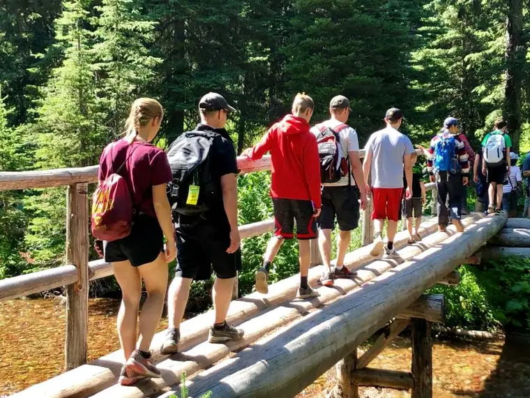
As was the case for me during our recent family trip to Glacier National Park. Despite having grown up in Montana (northeast), I’d never been to Glacier (northwest), and this bucket-list item gratefully produced some beautiful “God Glimpses,” including these 5:
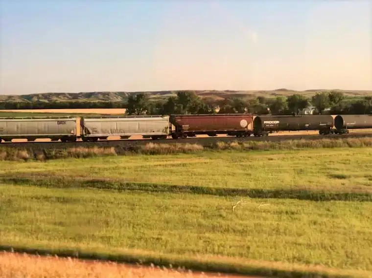
- Railroad Revelations: Our Glacier trip began, as all do, before we reached the actual park. The discoveries started when I realized that we would be leaving on Aug. 4, my father’s birthday. Dad passed away in January 2013; it’s been over six years. The fact that we would be traveling by train put him even more in my heart. Dad’s father was a railroad guy, and from his smallest years, my Dad had a fascination with trains. As a gift later in life, he received an electric train for Christmas; something he’d dreamed of as a boy but had never gotten due to meager means in their family of 11. As we boarded the train in Fargo in the wee hours, I felt Dad with me; and as the first light of day hit our eyes in Minot, N.D., a city where Dad was stationed in the U.S. Air Force, welcomed his firstborn daughter, my sister, Camille, and attended college to become a teacher, his essence flooded my soul. As we traveled west through the state I’d known him in the longest, sizing up the rolling hills Dad used to take me through on drives in the country, pointing out wildlife and the beauty of the area — which, at the time, I didn’t see — God showed me that my father is as alive now as then, and that now and into eternity, he will be near through the love he poured into me while on earth. “The Lord appeared to him from far away. I have loved you with an everlasting love; therefore I have continued my faithfulness to you.” (Jeremiah 31:3)
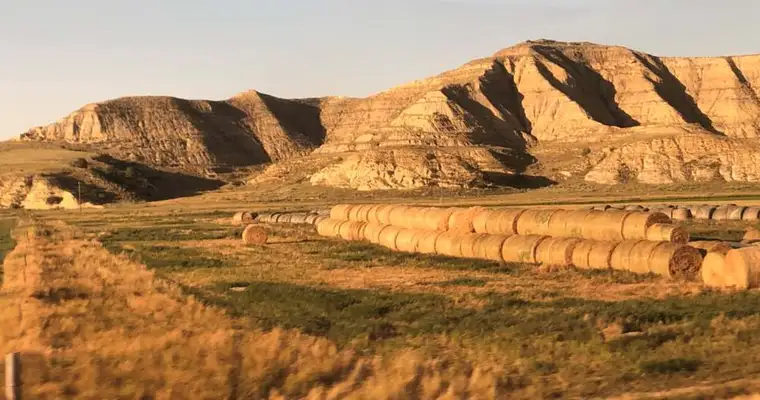
- Dock Ducks: I’d hoped to experience some wildlife while in the mountains, though the thought of being in grizzly country didn’t appeal so much. We heard about the bighorn sheep that frequented the paths we were on, but the only glimpse of something like it came at the end of a boat tour at Twin Medicine, where the guide pointed out a little white dot in the mountains beyond us, mentioning that it was a “mountain goat.” During a hike, a movement in the bushes produced a flash of something some fellow hikers thought might be a ferret, and our guide, pointing to fur on a tree with some claw marks, explained that a grizzly had been there within the last four days and rubbed up against that very spot. But other than the usual birds and insects, nothing astounding crossed our path — no moose or anything of the sort. However, as we waited for the boat to bring us back across the lake, a mother duck and her ducklings swam near the dock and kept me enthralled; I’d never seen ducks of that sort before. Our guide identified them as goldeneye ducks. Between these and some wild horses that met our shuttle on the road to St. Mary Village, I left satisfied that we’d experienced some of God’s beautiful creatures — and without having to run for our lives. “Look at the birds of the air; they do not sow or reap or store away in barns, yet your heavenly Father feeds them. Are you not much more valuable than they?” (Matthew 6:26)
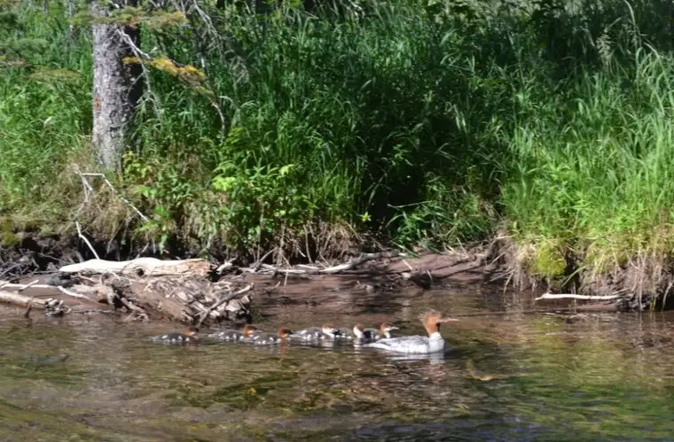
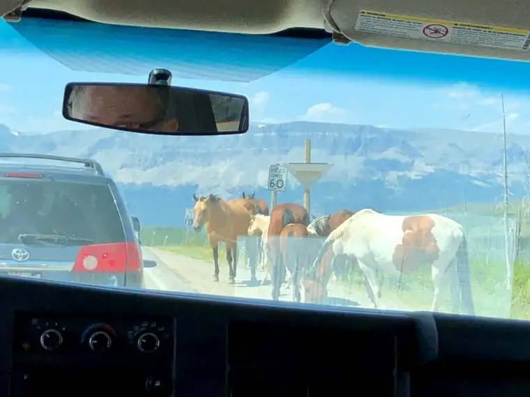
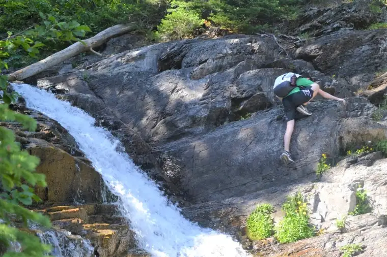
- Time to Treasure: Our children are now 14 to 23, and we no longer have many opportunities to all be together. Though our oldest had just started a new job and couldn’t be with us, we were surprised when our two daughters, 19 and 21, said “yes” to our invitation to be part of our adventure. It took a bit of work coordinating everything, making sure work schedules didn’t conflict, but in the end, I was reminded how valuable it is to just be together outside of the ordinary. The chance to discover new places, hang out at a secret beach where we sorted through the most magnificent array of rocks, inhale the sheer beauty surrounding, refreshed the soul. God desires we share these kinds of experiences with our families, and though they’ve become harder to come by through the years, the effort to make it work can prove priceless. To me, it seemed like a big “group hug” from God. And because my husband had just recovered from his second major (open heart) surgery three months before, this time was especially felt as a gift to treasure. “Teach us to number our days, that we may gain a heart of wisdom.” (Psalm 90:12)

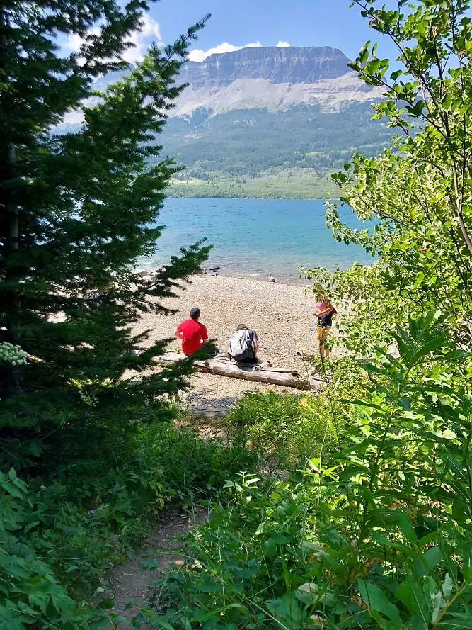
- Friendship Flashback: Just days before our journey, I noticed a friend’s Facebook post showing her in some waterfalls somewhere in the mountains. “Where are you?” I asked. “Glacier.” I told her we’d be there soon, too, learning that she lives within an hour and a half. “Let me know when you’re here; I’ll come visit.” We’d first met in first grade, when our teacher introduced her to me and asked me to show her around the playground. I loved Tomi, and was sad when she moved away to her “other” home in Tacoma, Wash., but eventually, she returned. We’d gotten back in touch in recent years through social media, but I never expected a chance to meet again in person. Nor did I expect such a powerful reunion, which included tears filled with sadness over the suffering we’ve experienced, and happiness over having discovered the joy of faith. Who could have known, 45 years after our first meeting, we’d find ourselves indelibly bound through Christ, and celebrating all this over coffee and huckleberry pie in East Glacier one fine day? “A friend loves at all times, and a brother is born for a time of adversity.” (Proverbs 17:17)
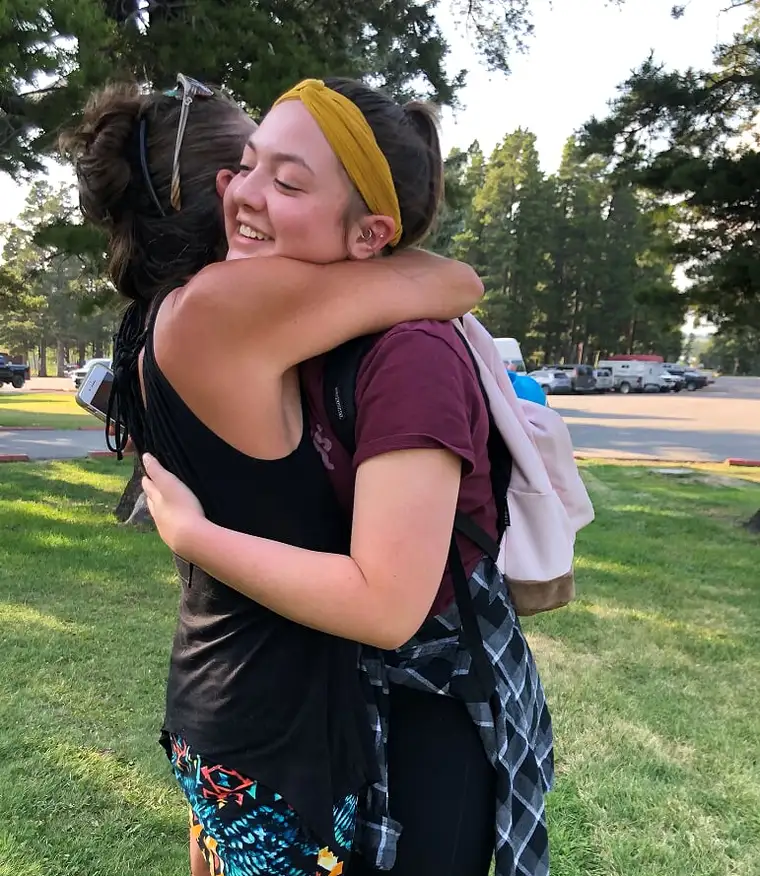

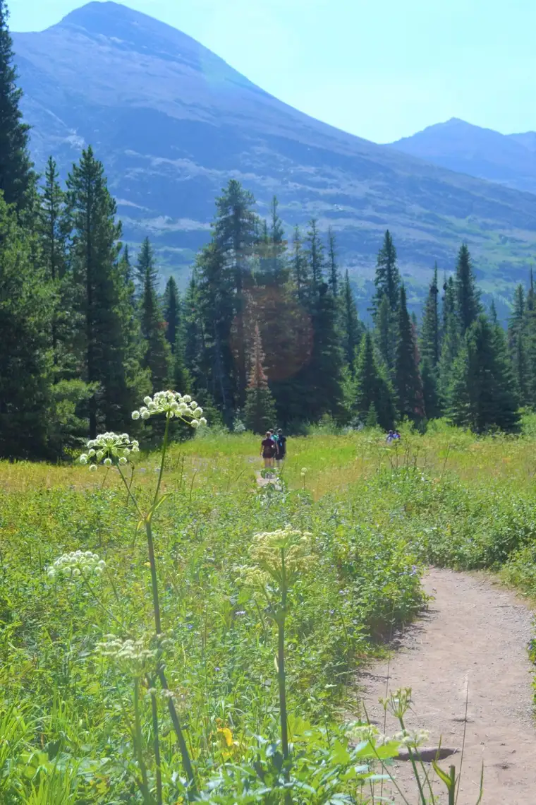
- Mightier than Mountains: The low point in our trip was during our first full day there. We’d just completed a beautiful hike to the lake, through a trail with gorgeous nooks and crannies, when two of our children, departed on an alternate and much longer trail. With no cell service, and all of us fairly inexperienced hikers, the consternation grew as the minutes passed as we awaited their return. I tried praying, but it was futile. My mother emotions took over, and it seemed that all of the fatigue built up from previous days, the many disappointments through mothering, and fears of what could happen, culminated. I eventually approached a park ranger, tears forming now and feeling desperate. About 10 minutes later, the two wanderers showed up, flushed and thirsty, but alive. But in the moments leading up to then, when the rest of us could do nothing but wait, I thought of God and how He must feel when we go our own way and decide to take an alternate route. If his pain in those unwelcomed departures is anything like what I felt, it is piercing and raw. I was ashamed to think of the times I had hurt God as I was hurting in that moment. I begged him to return my kids safely. The next day, I was humbled once again to realize the immensity of God when coming across these words in my Magnificat, while at the base of Rising Wolf Mountain, from Psalm 76: “You, O Lord, are resplendent, more majestic than the everlasting mountains.” And, from Saint Basil the Great, “What is more marvelous than the divine beauty…more likely to give pleasure than the magnificence of God?” We are so small, so unworthy, and God is so grand, and so good, beyond comprehension and our deserving. “But let all who take refuge in you be glad; let them ever sing for joy. Spread your protection over them, that those who love your name may rejoice in you.” (Psalm 5:11)
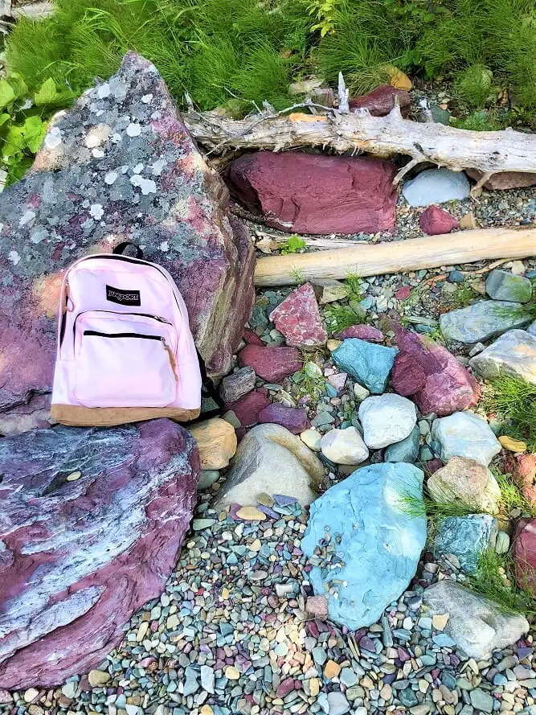
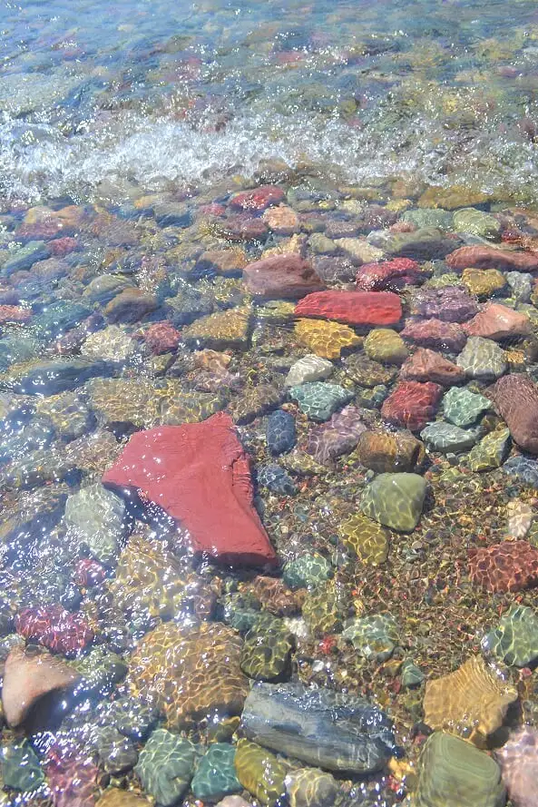
As I think back on our time in Glacier now, I am astounded by God’s goodness, and so grateful for this time with family and a friend, and the many beautiful reminders of what’s truly most important in life.
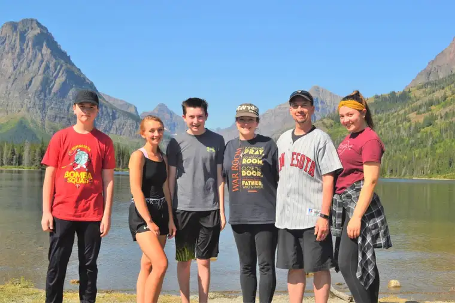
Q4U: Where did this summer take you, whether physically or spiritually?